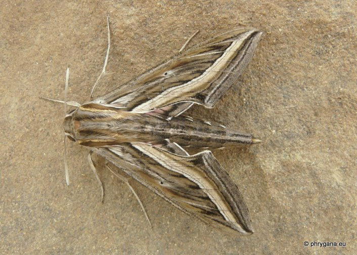
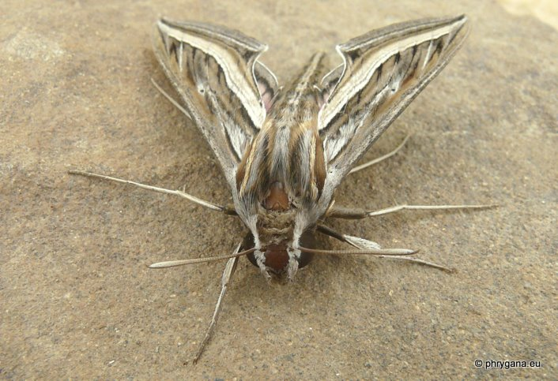
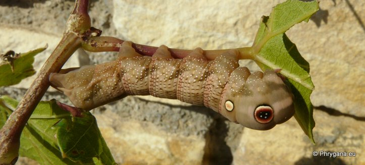
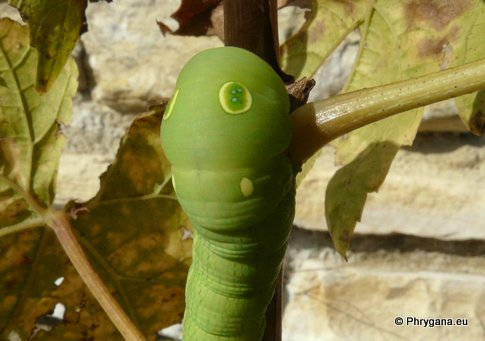
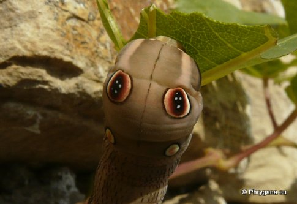
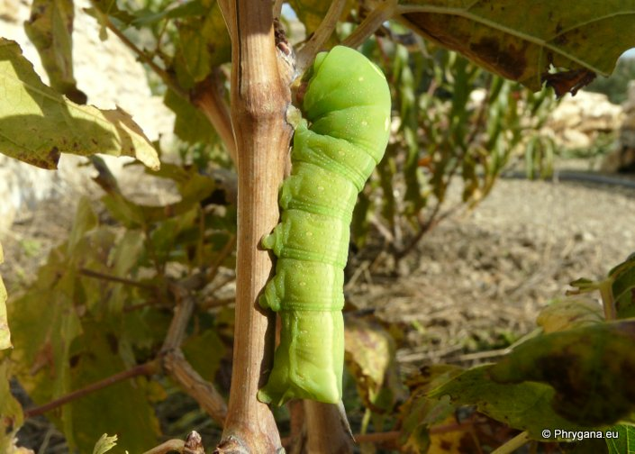
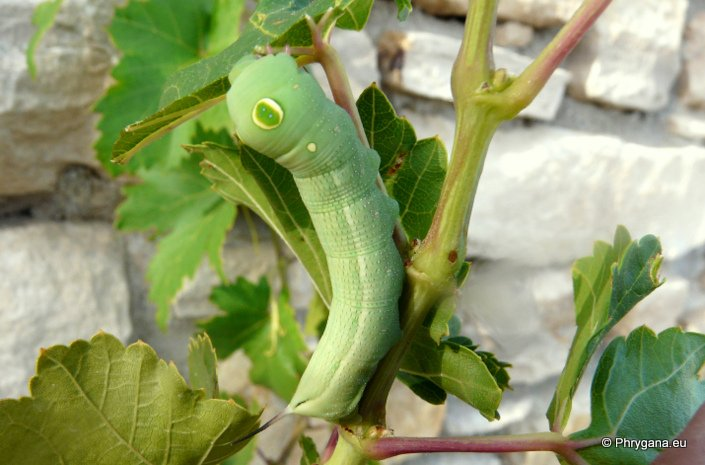
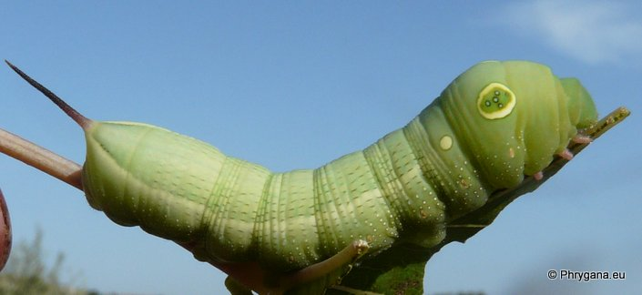

| PHRYGANA | Fauna | Flora | Galles | liste des espèces |
contact -
info - commentaires phrygana1 (at) gmail.com |
| Particularités crétoises | nouveautés | Mines | ressources naturelles |
| Hippotion celerio (Linnaeus 1758) |
| 282 | Fauna | SPHINGIDAE | Macroglossinae | Hippotion Hubner 1819 |
|
 Hippotion celerio Melambes (Agios Giorgos) 08 octobre 2011 |
| fr: le Sphinx phoenix en: Silver-striped Hawkmoth de: Grosse Weinschwärmer |
| Envergure entre 60 à 80 mm. Couleur de fond brun beige avec des veines noires à brun olive, variant peu en intensité suivant les individus. Veines blanches bien marquées sur les ailes antérieures. Extrémité des antennes blanchâtre. |
| Ponte: 1 oeuf à la fois (variable de forme: ronde à ovale) indifféremment sur les deux faces des feuilles; généralement un seul oeuf par tige; éclosion après une dizaine de jours |
| Jeune larve vert jaunâtre avec une longue corne noire; ensuite vert franc et un oeil sur le premier segment abdominal; au dernier instar, les larves deviennent brun foncé ou restent vertes; juste avant la nymphose, la taille atteint 80-90 mm |
| Chrysalidation dans un cocon lâche, soit dans la litiètre ou juste sous la surface du sol; chrysalide longue de 45 - 50 mm, couleur brun pâle avec des points brun foncé |
| Espèce phytophage: essentiellement Vitaceae, parfois Galium sp. |
| Espèce plurivoltine avec périodes de vol en mai, juin juillet août, septembre octobre |
| Durant la journée, se repose sur des rochers, poteaux, troncs d'arbres |
| Statut en Crète: indigène |
| Biotopes en Crète: phrygana, talus, garrigue, pelouses, champs abandonnés, vignobles |
| Altitudes: 0 - 1000 m. |
| Distribution: Afrique tropicale, Asie du Sud, Australie, Arabie, les régions chaudes des pays méditerranéens |
| Note: vient à la lumière. Activités diurne et nocturne. Espèce migratrice |
|
 Hippotion celerio Melambes (Agios Giorgos) 08 octobre 2011 |
|
 Hippotion celerio larve adulte sur Vitis vinifera subsp. vinifera Melambes (Agios Giorgos) 14 décembre 2012 |
|

 Hippotion celerio larve adulte sur Vitis vinifera subsp. vinifera Melambes (Agios Giorgos) 14 décembre 2012 |
|
 Hippotion celerio larve adulte sur Vitis vinifera subsp. vinifera Melambes (Agios Giorgos) 14 décembre 2012 |
|
 Hippotion celerio larve adulte sur Vitis vinifera subsp. vinifera Melambes (Agios Giorgos) 17 octobre 2012 |
|
 Hippotion celerio larve adulte sur Vitis vinifera subsp. vinifera Melambes (Agios Giorgos) 17 octobre 2012 |
| 25 mai 2013 |
| © paul fontaine -- © Phrygana.eu 2007 -- 2013 |